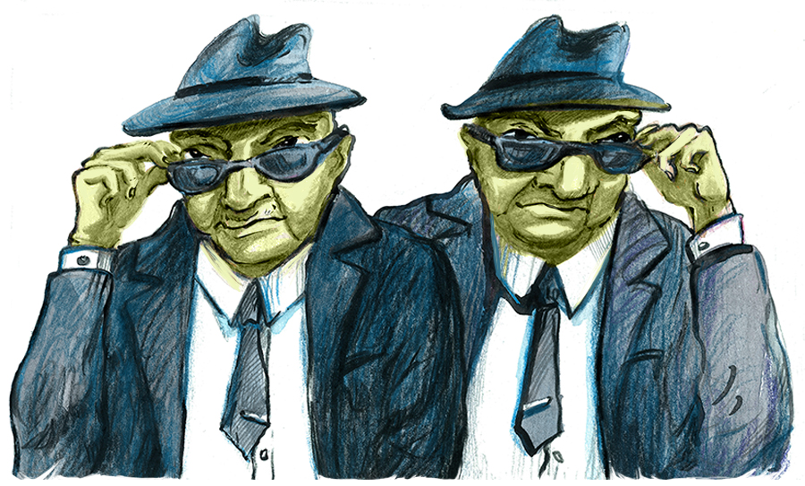
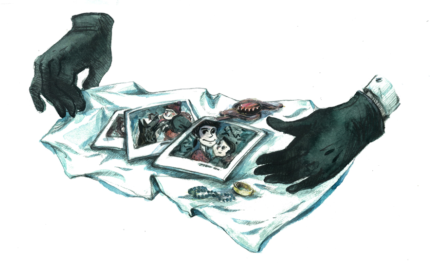

Папа Римский Франциск недавно заявил, что интернет является даром божьим. Этим высказыванием он обобщил представления об интернете многих людей. Но современный вид и способ функционирования интернета и, прежде всего, социальных сетей, указывают на то, что к ним следовало бы относиться гораздо более критично и осторожно. Интернет сам по себе определённо не принесёт человечеству спасение.
Марк Пфайфл, будучи советником по вопросам национальной безопасности Джорджа Буша, в 2009 году хотел номинировать Twitter на Нобелевскую премию мира в связи с антиправительственными демонстрациями в Иране. Twitter тогда стал одним из немногих каналов, через которые зарубежье узнавало, что происходит в стране. Он служил преимущественно для мобилизации и созыва населения на демонстрации. В крупнейших мировых газетах в то время появлялись восторженные статьи, прославляющие интернет как инструмент демократизации в глобальном мире. Повсюду гремела весть, что подавление и несправедливость будут уничтожены не оружием массового поражения, не дронами, а рядом правильно направленных твитов.
Бессмысленность подобного восторга открылась вскоре, когда именно социальные сети помогли репрессивным органам подавить оппозиционное движение в основании. В связи с тем, что данные в социальных сетях хранятся очень централизованно, взлом одного пароля ведёт к раскрытию целой сети контактов. Те данные, которые аппарат раньше должен был получать от информаторов с затратой огромных усилий, путём слежки и шпионства, сегодня находятся у него в руках: информацию добровольно предоставляет сам объект слежки. Когда нынешний цензор просматривает страницы интернета с целью найти и наказать неблагонадёжного гражданина, то его действия — в отличие от предшественников, работавших лет 20-30 назад — уже не играют никакой роли. Процесс преследования с того времени радикально изменился. Ранее первичным был подозреваемый, противогосударственную деятельность которого требовалось доказать. Сейчас мы имеем сначала антигосударственную деятельность, и только потом ищем виновного. Виновный теперь только соответствует статье, совокупности противозаконных действий, в которых его могут обвинить. В таком мире не существует жалости.

Индивидуальная цензура
Компании Facebook и Twitter не присоединились к Global Network Initiative, участие в которой принимают Microsoft, Google и Yahoo. Инициатива стремится к соблюдению прав человека и права на охрану личной информации в виртуальном пространстве. Это решение имеет, конечно, очень простое объяснение. Обе компании были бы вынуждены ограничить оптимизацию клиентских служб и создание рекламы, направленной на различные группы пользователей.
Сам же Google получает из кэша действующие гиперссылки пользователей, на основе которых разрабатывает алгоритмы, используемые в рекламе и пропаганде продуктов. Благодаря Twitter’у и Facebook’у сбор информации для коммерческого использования стал ещё эффективнее. Коммерческие организации, разумеется, стараются разработать более совершенные формы рекламы и объявлений, которые бы соответствовали возможностям интернета. Эти стратегии, однако, являются палкой о двух концах, поскольку в то же время ставят под угрозу одну из главных характеристик интернета — анонимность. На том же принципе основана и принятая в Китае сложная «цензура на меру», которая ограничивает доступ конкретных людей к определённым сайтам и серверам на основании их поведения в виртуальном мире.
Концлагерь на кухне
В социальных сетях важна в первую очередь информация. По словам теоретика медиа Евгения Морозова, мы являемся свидетелями радикальной перемены капитализма, где информация функционирует в качестве альтернативной валюты. Мы предоставляем множество деталей и сообщений о себе, касающихся даже личной жизни, в обмен на возможность «бесплатно» использовать интернет-службы. Но мало кто задумывается, что с этой информацией впоследствии происходит.
В своей новой книге To Save Everything, Click Here: The Folly of Technological Solutionism (Чтобы всё сохранить, нажмите здесь. Безумие технологического солюционизма, 2013) Морозов приводит пример, который демонстрирует тотальное количество ставок в этом «обмене». Джинна Леи из Вашингтонского университета занимается исследованием, которое должно предоставить нам больший комфорт во время приготовления еды. Она установила на кухне несколько специализированных камер, которые могут распознавать, какими объектами мы оперируем и какое сырьё используем. Система камер должна была контролировать правильный ход приготовления и предупредить ошибки или неверное использование ингредиентов.
Идея о системе камер, которые за нами наблюдают и дают задания по приготовлению домашней свиной вырезки сама по себе немного извращённая, но для некоторых людей более эффективное приготовление еды может быть привлекательным. Однако настоящая ценность как раз в распознавании информационного обмена, которое можно монетизировать. Побочным эффектом кухонного концлагеря может быть тот факт, что камера передаст информацию о потреблении сахара и жира вашей страховой компании, и та изменит условия вашего страхования. У нас (В Чехии — Прим. ред.) этот случай не имеет такой силы, потому что пока есть иммунитет к оптимизации страховых договоров, но ясно, на что этот пример указывает.
Опасность третьих сторон

Далеко ходить не надо, достаточно вспомнить о недавнем амбициозном проекте sKarta бывшего чешского министра труда и социальных дел Яромира Драбека, члена партии TOP 09. В этом случае государство передало личную информацию о гражданах, получающих пособие, коммерческой организации (Česká spořitelnaСамый крупный сберегательный банк Чехии), которая могла далее использовать их по своему усмотрению. Такие действия могут негативно повлиять на национальную экономику, ведь государство избавляется от важной информации, которой могло бы руководствоваться при разработке экономического плана на будущее. В наиболее абсурдном случае государство будет вынуждено выкупить эту информацию у третьей стороны обратно. По всей видимости, торговля личной информацией касается не только популярных социальных сетей, но распространяется и на общественные услуги. Нынешняя тенденция передавать IT-заказы третьим сторонам (частным лицам) является для национального благосостояния потенциальной угрозой. Под прикрытием технооптимизмаТечение современной футурологии; уверенность в том, что наука и техника позволят успешно решить глобальные проблемы современности. и якобы повышения эффективности возникает пространство для коррупции, которое стимулирует недобросовестную торговлю информацией и делает государство менее дееспособным.
Красивую и в целом свободную интернет-сеть разделили глобальные корпорации, которые всюду, где возможно, стремятся взимать плату за свои услуги. Тем не менее, мы по-прежнему склонны воспринимать интернет как общественное пространство, принадлежащее всем. Несмотря на то, что социальные сети притворяются, будто поддерживают социальную сплочённость, они, скорее, уничтожают её всё более изощрёнными способами. Для общества нет ничего разрушительнее, чем разложение социального сознания средствами, которые должны его с(т)имулировать.
Верните нам скуку
Иллюзия общественного пространства в социальных сетях настолько велика, что та часть пользователей, которая ещё проявляет интерес к общественным проблемам, путает активность в Facebook’е с реальной активностью. Facebook, может быть, и информирует общественность и служит средством мобилизации, но не может стать заменой реального действия. Конечно, намного забавнее сохранить планету несколькими кликами мыши, чем исследовать новые постановления Горисполкома, блокировать вырубку национальных заповедников или физически противостоять шествию неонацистов — для изменения порядка одних кликов, определённо, недостаточно.
С другой стороны, социальные сети своим акцентом на развлекательность вымещают из жизни пользователей опыт скуки, которая была одним из основных эмоциональных переживаний, ведущих к политизации и радикализации общества. Благодаря интернету, политическая повседневность в Чехии ничем не отличается от таковой, например, в Беларуси. Дешёвое и легкодоступное развлечение распространяет среди населения удовлетворённость, которая скрывает действительность и делает любую политическую активность масс тяжело реализуемой.
Но возлагать всю вину на интернет несправедливо. Интернет всего лишь развивает и радикализирует предшествующие варианты коммуникации. Ни одна из вышеупомянутых проблем не является свойственной исключительно интернету. Всё зависит главным образом от того, как интернет используется: кто его потребляет и злоупотребляет им. Интернет-оптимисты, которые считают интернет главным оружием демократизации, заслуживают иронии так же, как и их противники, которые видят в интернете квинтэссенцию зла, подавления и репрессий. Знание того факта, что виртуальная сеть не является пространством абсолютной свободы и что её функционирование обусловлено влиятельными заинтересованными группами, должно первым делом привести пользователей к повышенной осторожности.